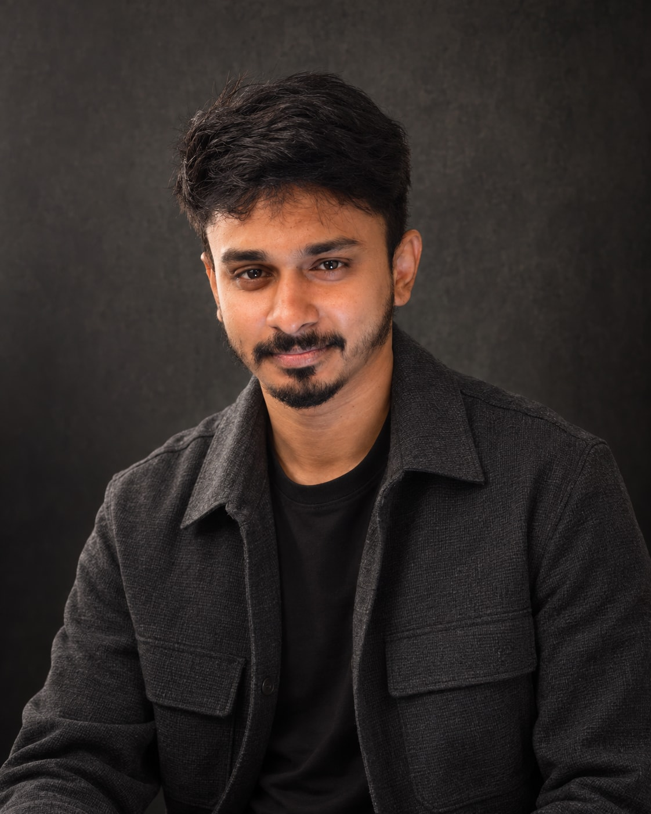
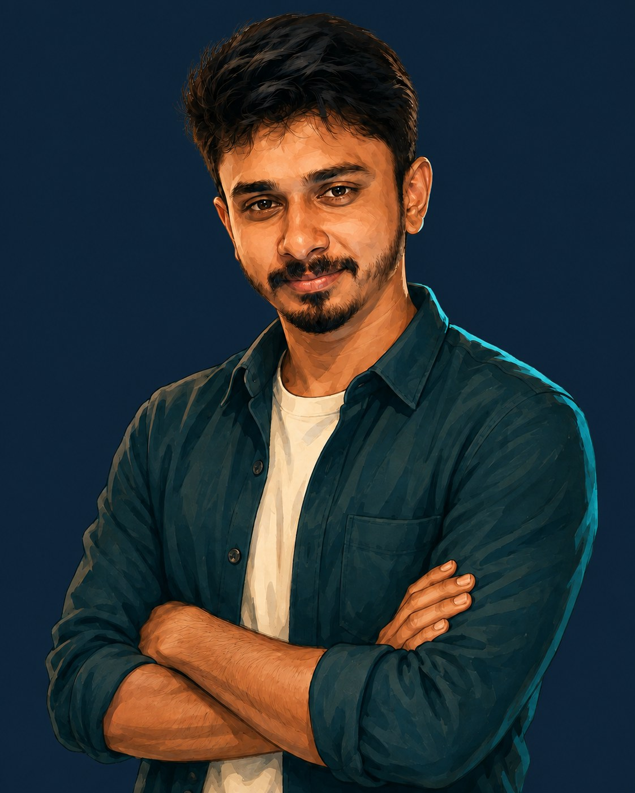
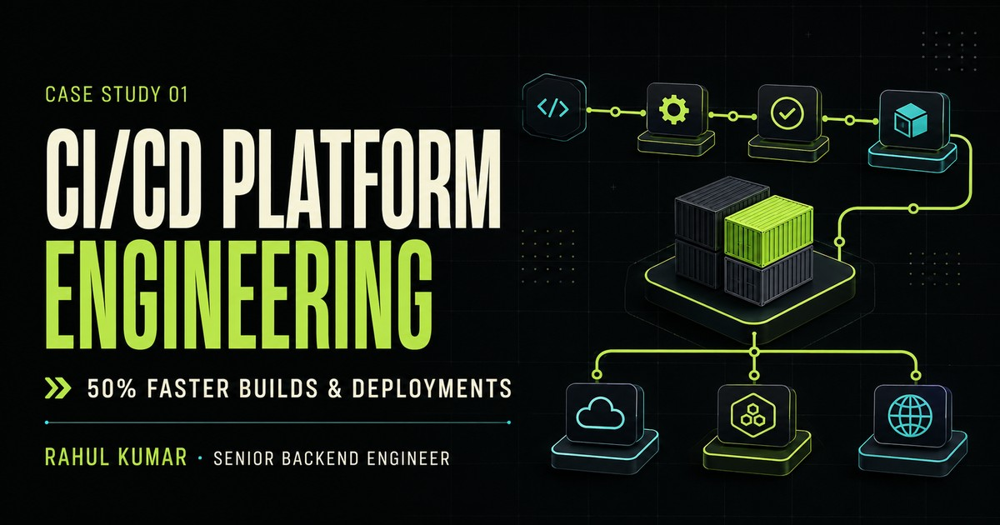
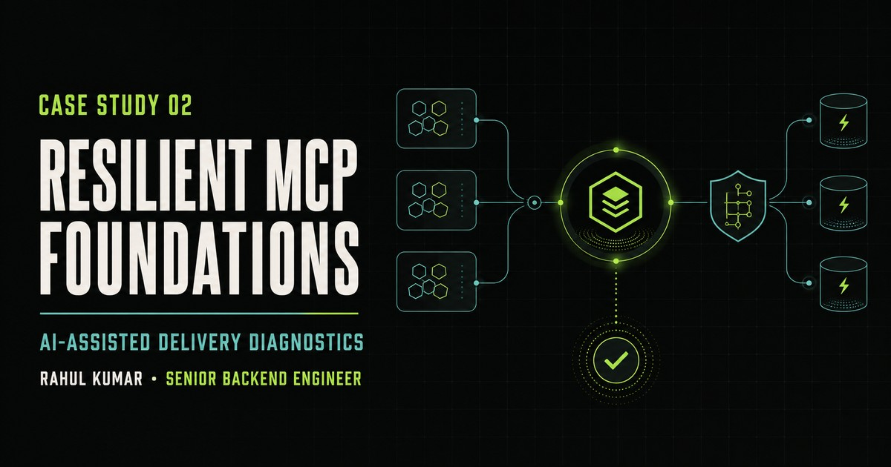
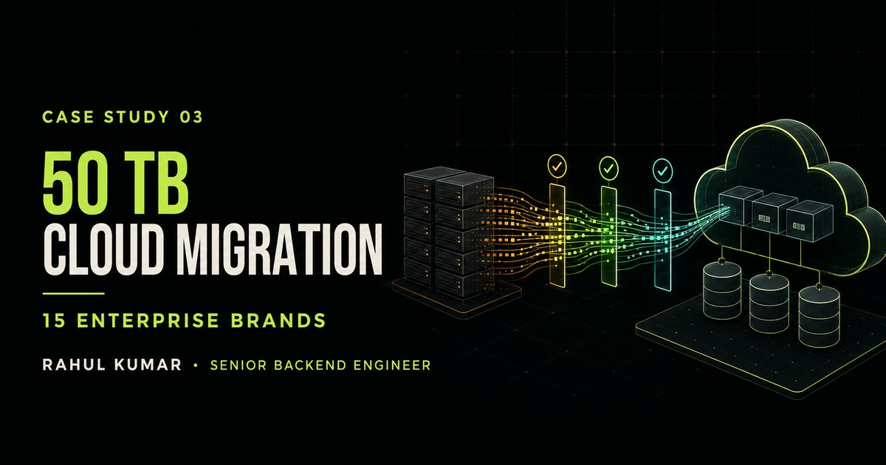

Backend systems, cloud platforms, and technical ownership across three chapters.
Bengaluru, India · Building beyond the request

A calm engineering perspective on complex systems
Rahul Kumar
I build distributed platforms, cloud infrastructure, and developer tooling that hold up under pressure.
Build and deployment workflows improved through platform-level engineering.
Enterprise content moved across fifteen brands with control and continuity.
The engineer behind the systems
Complexity is inevitable.
Chaos is optional.
I work where backend engineering, cloud infrastructure, and developer experience meet—turning difficult operational problems into systems teams can scale, observe, and trust.

Senior Backend Engineer · SDE3
JPMorgan Chase & Co.
Give the problem structure.
Build from clear boundaries.
Start with the simplest architecture that can evolve: explicit contracts, observable behavior, and decisions the next engineer can understand.
Make pressure predictable.
Scale without losing the plot.
Plan for changing load, partial failure, and operational ownership before complexity turns into an expensive surprise.
Keep production boring.
Operate with calm evidence.
Automate the repetitive path, expose the right signals, and design recovery into the system rather than the incident playbook.
Selected systems
Ideas are a start.
This is the impact.
Three production stories where platform thinking changed speed, resilience, or scale.

Platform engineering · JPMorgan Chase & Co.
Re-engineering the path from commit to deployment.
DAG execution, dependency caching, and remote container-build infrastructure—cutting build and deployment time by 50%.
Read the case study
AI engineering · Reliability
A resilient foundation for intelligent developer tools.
Fault-tolerant services, highly available caching, worker pools, and AI-assisted CI/CD failure diagnostics.
Read the case study
Cloud migration · Mindtree
Moving enterprise content without losing control.
Technical leadership for a 50 TB migration across fifteen enterprise brands from on-premises systems to Adobe AEM.
Read the case studyCareer progression
Eight years.
Three chapters.
Increasingly complex systems, wider ownership, and platform-level responsibility.
2022Present
JPMorgan Chase & Co.
Senior Software Engineer SDE3
Bengaluru, India
- Core engineering for CI/CD optimization and remote container-build platforms.
- Resilient MCP foundations and AI-assisted diagnostics for developer workflows.
- Reliability controls spanning rate limits, circuit breakers, caching, and observability.
20212022
Oracle
Member of Technical Staff
Bengaluru, India
- Architecture, proofs of concept, and technical design for core platform features.
- Spring Boot microservices deployed with Docker, Kubernetes, and Helm.
- Observability pipelines and pod-protection mechanisms for high-traffic scaling.
20182021
Mindtree
Software Developer
Bengaluru, India
- Ownership of payment, banking, revenue, and BOD/EOD modules.
- Scalable REST services with Java and Spring Boot.
- Technical leadership for a 50 TB enterprise cloud migration.
How I work
Depth where it matters.
Clarity everywhere else.
Backend & architectureDesign durable service boundaries
Maintainable distributed workflows and APIs that remain understandable as systems grow.
- Java 8–21+
- Golang
- Spring Boot
- Reactive Java
- Microservices
- REST
Cloud & platformBuild a dependable path to production
Reproducible infrastructure and container platforms that improve delivery speed and confidence.
- AWS
- Terraform
- Docker
- Kubernetes
- Helm
- ECS Fargate
Reliability & deliveryDesign for failure and recovery
Observable pipelines, defensive patterns, and delivery systems built to recover gracefully.
- CI/CD
- Jenkins
- Prometheus
- Grafana
- Redis
- High availability
AI engineeringApply intelligence to real workflows
Practical GenAI and MCP integrations for diagnostics, developer productivity, and operations.
- GenAI
- MCP
- AWS Bedrock
- AI diagnostics
- GitHub Copilot
- Claude
Published thinking
Learn the code.
Understand the system.
The System Design Atlas turns architecture decisions into practical, reasoned learning paths.
Independent knowledge base
The System Design Atlas
Practical guides to DSA, Java, application design, cloud, and AI—with examples you can reason through.
Explore the Atlas
42 min read · System design
Stop Guessing What to Study: The System Design Interview Roadmap
A structured route through requirements, scale, data, reliability, security, and practice.
Read article 2 min read · FoundationsSystem Design Foundations
The requirements, numbers, data, and failure questions that come before an architecture diagram.
Read article 2 min read · EstimationBack of the Envelope Estimation
Estimate traffic, storage, bandwidth, and concurrency with simple numbers that guide design.
Read article 7 min read · Case studyURL Shortener System Design
Design a reliable service from requirements through storage, caching, and failure handling.
Read articleThe next conversation
Hard problem?
Let’s make it calmer.
Start a conversation
Backend platforms · Distributed systems · Cloud reliability · Developer tooling